Making ECG Leads¶
This guide explains how to construct ECG leads for use with the LOOPER system.
Materials Required¶
ECG Pins
Tape
Solder with Rosin Core
Red, White, and Black cooper leads
{kind=link}
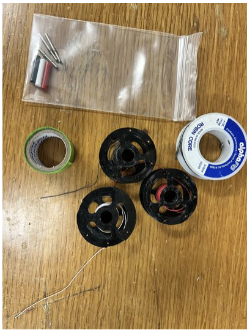
Equipment Required¶
Soldering Iron
Solder Flux
Wire Cutters
Clamp
Brass
Wet Sponge
{kind=link}
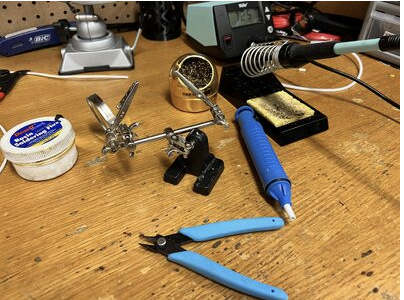
Construction Steps¶
Clean the solder by dipping it into the solder flux and then whipping it off in the brass and the wet sponge.
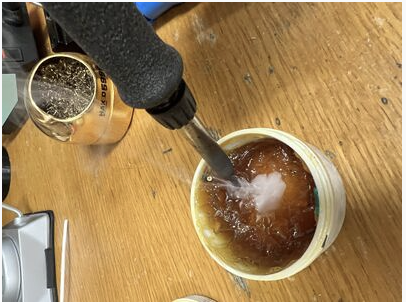
Apply tape to on side of the holders to cover the teeth. This prevents damage to the wire when it will be help by it.
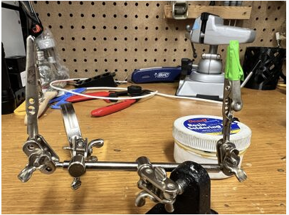
Place an ECG pin on the other side of the holder with the opening facing up.
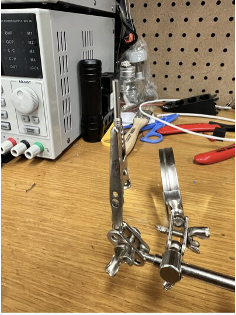
Using the wire cutters, cut a piece of the copper leads.
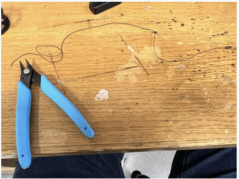
Strip a small amount of the lead on one side to expose the copper wiring.
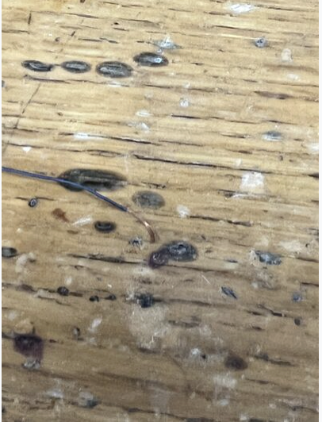
Use the holder, tape side, to hold the wire upright.
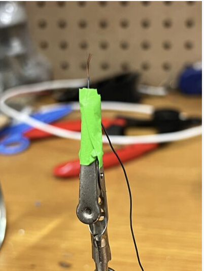
Use the solder and the soldering iron to coat the exposed copper wire with solder.
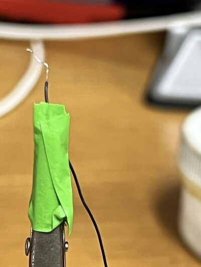
Add a small amount of solder to the the ECG pin.
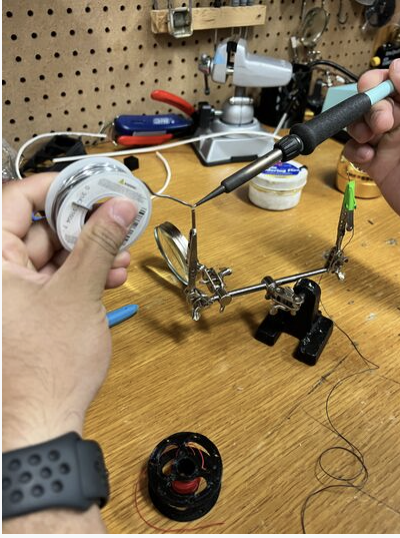
Melt the solder in the ECG pin and slide the coated wire in.
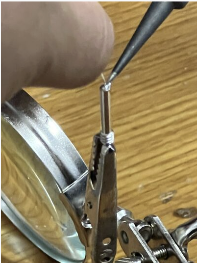
Strip a small amount of the ECG lead on the exposed side.
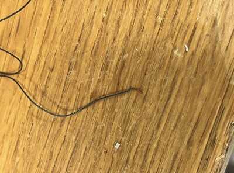
Use the Multimeter to test for connection.
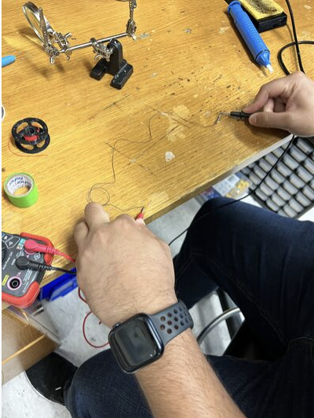
Apply the respective colored cap to the ECG pin and you are done.
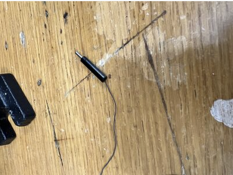
{kind=link}
{kind=link}
{kind=link}
{kind=link}
{kind=link}
{kind=link}
{kind=link}
{kind=link}
{kind=link}
{kind=link}
{kind=link}
{kind=link}